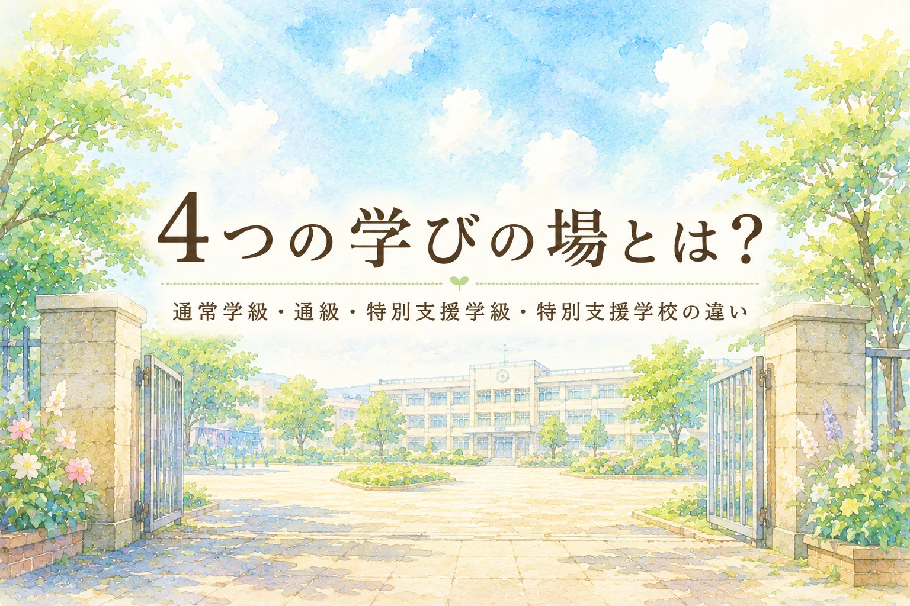

就学相談で一番迷いやすいのが、「どの学びの場を選ぶか」です。
通常学級、通級指導教室、特別支援学級、特別支援学校。名前は聞いたことがあっても、それぞれが何をする場所なのか、どう違うのかは見えにくいものです。
しかも、保護者にとっては単なる制度の話ではありません。「この選択で子どもの将来が決まってしまうのではないか」「一度選んだら戻れないのではないか」と感じることもあります。
でも、学びの場は、子どもに優劣をつけるための箱ではありません。お子さんが学びに参加しやすくなるように、支援の量や方法、環境を考えるための選択肢です。
この記事でわかること
- 4つの学びの場の大まかな違い
- 通常学級と通級指導教室、特別支援学級、特別支援学校の関係
- 就学相談で「学級名」より先に整理したい視点
- 決めた後も、必要に応じて見直せるという考え方
※ 制度の基本は全国共通ですが、相談の時期、通級指導教室の設置状況、見学方法、支援体制は自治体や学校によって異なります。実際に検討するときは、お住まいの市区町村の教育委員会や在籍園・学校に確認してください。
4つの学びの場を一度に見る
まずは、4つを横に並べて見てみます。
通常学級
地域の小学校・中学校の通常の学級で学びます。必要に応じて、合理的配慮や校内支援を受けながら学ぶことがあります。
通級指導教室
通常学級に在籍しながら、一部の時間だけ別の場で特別な指導を受ける仕組みです。
特別支援学級
小学校・中学校の中に設置される少人数の学級です。学習内容や環境を、その子に合わせて調整しやすくなります。
特別支援学校
障害の状態や教育的ニーズに応じて、より専門的な教育環境で学ぶ学校です。小学部・中学部・高等部などがあります。
| 学びの場 | 在籍の考え方 | 支援の特徴 | 考えるときの視点 |
|---|---|---|---|
| 通常学級 | 通常学級に在籍 | 担任・校内支援・合理的配慮で学びやすさを整える | 集団の中で参加できているか。必要な配慮が具体化できるか。 |
| 通級指導教室 | 通常学級に在籍し、一部の時間だけ通級 | 学習面・生活面の困り感に合わせた個別または小集団の指導 | 通常学級での学びを土台にしながら、追加の支援が必要か。 |
| 特別支援学級 | 特別支援学級に在籍 | 少人数で、学習内容・時間・環境を調整しやすい | 日常的に支援を受けながら学ぶ方が安心しやすいか。 |
| 特別支援学校 | 特別支援学校に在籍 | 障害の状態に応じた専門的な教育課程・環境・支援体制 | 安全面、健康面、コミュニケーション、生活面も含めた専門的支援が必要か。 |
通常学級は「支援なし」の場所ではありません
通常学級というと、「みんなと同じことを同じようにする場所」と受け止められがちです。けれど、通常学級に在籍している子どもにも、必要に応じた支援や合理的配慮を考えることがあります。
たとえば、席の位置を調整する、予定を見える形で示す、板書量を調整する、指示を短く区切る、音や光への負担を減らす。こうした工夫で、通常学級で参加しやすくなる子どももいます。
大切なのは、「通常学級にいるなら支援はいらない」と考えないことです。通常学級でも、通級でも、特別支援学級でも、特別支援学校でも、その子に必要な支援を考えることは共通しています。
通級指導教室は、通常学級を続けながら使う支援です
通級指導教室は、通常学級に在籍しながら、一部の時間だけ別の場で特別な指導を受ける仕組みです。文部科学省も、大部分の授業は通常学級で受けながら、障害による学習面や生活面の困難を改善・克服するための指導を受けるものとして説明しています。
通級は、子どもを通常学級から遠ざけるための場所ではありません。むしろ、通常学級で過ごしやすくなるために、自分の得意不得意を知り、助けを求める方法や学び方の工夫を身につける時間です。
千葉市のLD等通級指導教室の案内でも、通常の学級に在籍する児童生徒を対象に、学校生活への適応、情緒の安定、社会性の発達を促す指導や、家庭・学校との連携が示されています。これは千葉市の例ですが、「通常学級を土台にした支援」という考え方は押さえておきたいところです。
特別支援学級は、日常的に支援を受けながら学ぶ場です
特別支援学級は、小学校や中学校の中に置かれる少人数の学級です。通常学級での一斉授業だけでは、学習面・生活面の負担が大きくなりやすい子どもにとって、学習の進め方や環境を調整しやすい場になります。
ただし、「特別支援学級に入れば安心」と単純に言い切ることはできません。担任の専門性、交流及び共同学習のあり方、学校全体の支援体制によって、実際の学びやすさは変わります。
見学できる場合は、人数だけではなく、子どもがどのように学んでいるか、通常学級との交流はどう行われているか、困ったときに誰がどう支えるのかを見てください。
特別支援学校は、専門的な環境で学ぶ場です
特別支援学校は、視覚障害、聴覚障害、知的障害、肢体不自由、病弱など、障害の状態に応じた専門的な教育環境で学ぶ学校です。教科の学習だけでなく、自立活動、生活面、健康面、安全面、コミュニケーション面も含めて支援を組み立てます。
特別支援学校を選ぶことは、「地域の学校ではだめだった」という意味ではありません。お子さんにとって、より専門的で安心できる環境が必要だと考える選択肢です。
一方で、通学距離、地域の友だちとの関係、放課後の生活、将来の進路なども関係します。学校見学や教育委員会との相談を通して、具体的な生活を思い浮かべながら考えることが大切です。
学級名より先に、子どもの姿を整理する
就学相談では、つい「通常学級か、支援学級か」「特別支援学校になるのか」という名前に意識が向きます。もちろん、学びの場の名前は大切です。でも、名前だけでは子どもの生活は見えてきません。
先に整理したいのは、次のようなことです。
- どんな場面で困り感が出やすいか
- どんな伝え方なら理解しやすいか
- どのくらいの集団なら安心して参加しやすいか
- 友だちとの関わりで、何が支えになるか
- 健康面、安全面、移動、感覚面で配慮が必要か
- 本人が学校生活をどう感じているか
- 保護者が特に心配していることは何か
この整理があると、就学相談で「どこに入るか」だけでなく、「どんな支援があれば、その子が学びやすくなるか」を話しやすくなります。
制度上、就学先の決定では、本人・保護者の意見を可能な限り尊重し、教育的ニーズと必要な支援について合意形成を行うことが原則とされています。
最終的には市町村教育委員会が総合的に判断しますが、保護者が感じていること、家庭で見えている子どもの姿、本人の不安や希望は、相談の中で大切な情報になります。
一度決めたら終わり、ではありません
就学時の選択は大切です。でも、そこで一生が固定されるわけではありません。成長、学校での適応状況、本人の気持ち、家庭や学校の支援体制によって、学びの場を見直すことがあります。
通常学級から通級を使い始める子、特別支援学級から通常学級に転籍する子、特別支援学校から地域の学校へ移る子、その逆の選択をする子もいます。
大切なのは、「最初に正解を当てる」ことではありません。今のお子さんが参加しやすい形を考え、合わなくなったときに早めに相談し直せるようにしておくことです。
あわせて読みたい
3制度の比較をもう少し実務的に見たい場合は、既存記事の 通級・特別支援学級・特別支援学校の違いと選び方 も参考になります。
就学相談そのものへの不安が強い場合は、前回の記事 就学相談を前に立ち止まっているあなたへ から読むと、相談と決定の違いを整理しやすくなります。
個別に整理したいときは
お子さんの状況、学校での困り感、就学相談で聞かれていることを一緒に整理したい場合は、保護者向け相談ページもご覧ください。診断や就学先の決定を代替するものではなく、学校や教育委員会と話し合うための材料づくりをお手伝いします。
参考資料
- 文部科学省「障害のある子供の就学先決定について」
- 文部科学省「障害のある子供の教育支援の手引」
- 文部科学省「初めて通級による指導を担当する教師のためのガイド」
- 文部科学省「特別支援教育の現状」
- 千葉市養護教育センター「千葉市LD等通級指導教室 ご案内」
確認日：2026年6月1日